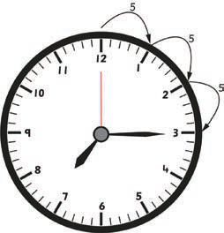
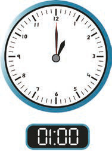
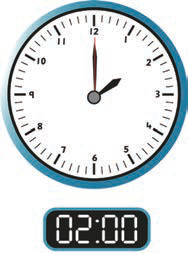
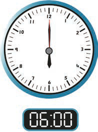

Reading the time in hours and minutes
Start reading hours followed by minutes. To read minutes, start at number 12 in the clockwise direction, until the minute-hand is reached.
Example 2
Draw an analogue clock face that shows 07:15.
Answer

Example 3
Study the following analogue and digital clock faces, then read the time.
(a)

(a) 1 O’clock
(b)

(b) 2 O’clock
(c)

(c) 6 O’clock
Answer
(a) 1 O’clock
(b) 2 O’clock
(c) 6 O’clock